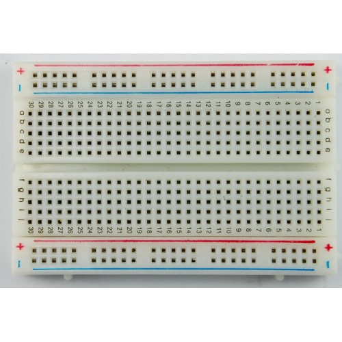

Oferecimento

Arduino
Arduino é uma plataforma de prototipagem eletrônica de hardware livre, criada na cidade Ivrea, na Itália em 2005, projetada com um microcontrolador Atmel AVR com suporte de entrada/saída embutido, uma linguagem de programação padrão, essencialmente C/C++.
Python
Python é uma linguagem de programação de alto nível, interpretada, de script, orientada a objetos, funcional, de tipagem dinâmica e forte. Foi lançada por Guido van Rossum em 1991

Modelos de Arduino
Sistema de acesso RFID

BlackBoard
It's Coding Time
O que vamos usar
Protoboard
 Adquira a suaJumpers
 Adquira o seu
Adquira o seu
Resistores
Adquira o seuSensor de Distância Ultrassônico HC-SR04
 Adquira o seu
Adquira o seu

Módulo PySerial
pip install pyserial

Led Blink - C
int led = 13;
void setup() {
// initialize the digital pin as an output.
pinMode(led, OUTPUT);
}
void loop() {
digitalWrite(led, HIGH); // turn the LED on
delay(1000); // wait for a second
digitalWrite(led, LOW); // turn the LED off
delay(1000); // wait for a second
}
Blink Led PyFirmata
from pyfirmata import Arduino, util
import time
board=Arduino('/dev/ttyUSB0')
for i in range(10):
board.digital[13].write(1)
time.sleep(1)
board.digital[13].write(0)
time.sleep(1)
Led Blink - Python(BlackBoard)
int led1 = 13;// Porta onde o led será inserido
void setup(){
Serial.begin(9600); // Velocidade padrão do Uno
pinMode(led1, OUTPUT); // Porta onde o led será inserido, configurado como saida
}
void loop(){
char leitura = Serial.read(); // Variavel que receberá os valores enviados pelo programa em python
if(leitura == '1'){
digitalWrite(led1, HIGH);// Liga a porta 13 se o valor recebido for 1
}
else if(leitura == '2'){
digitalWrite(led1, LOW);// Desliga a porta 13 se o valor recebido for 2
}
}
Blink Led PyFirmata
from pyfirmata import Arduino, util
import time
board=Arduino('/dev/ttyUSB0')
for i in range(10):
board.digital[13].write(1)
time.sleep(1)
board.digital[13].write(0)
time.sleep(1)
Régua Ultrassônica
import serial
arduinoSerialData = serial.Serial('/dev/ttyUSB0', 9600)
while (1==1):
if (arduinoSerialData.inWaiting() > 0):
myData = arduinoSerialData.readline()
print(myData)
Régua Ultrassônica
int trigPin=10; //Sensor Trig pin connected to Arduino pin 13
int echoPin=11; //Sensor Echo pin connected to Arduino pin 11
float pingTime; //time for ping to travel from sensor to target and return
float targetDistance; //Distance to Target in inches
float speedOfSound=776.5; //Speed of sound in miles per hour when temp is 77 degrees.
int ledRed = 13;
int ledGreen = 12;
void setup() {
// put your setup code here, to run once:
Serial.begin(9600);
pinMode(trigPin, OUTPUT);
pinMode(echoPin, INPUT);
pinMode(ledRed, OUTPUT);
pinMode(ledGreen, OUTPUT);
}
void loop() {
// put your main code here, to run repeatedly:
digitalWrite(trigPin, LOW); //Set trigger pin low
delayMicroseconds(2000); //Let signal settle
digitalWrite(trigPin, HIGH); //Set trigPin high
delayMicroseconds(15); //Delay in high state
digitalWrite(trigPin, LOW); //ping has now been sent
delayMicroseconds(10); //Delay in low state
pingTime = pulseIn(echoPin, HIGH); //pingTime is presented in microceconds
pingTime=pingTime/1000000; //convert pingTime to seconds by dividing by 1000000 (microseconds in a second)
pingTime=pingTime/3600; //convert pingtime to hourse by dividing by 3600 (seconds in an hour)
targetDistance= speedOfSound * pingTime; //This will be in miles, since speed of sound was miles per hour
targetDistance=targetDistance/2; //Remember ping travels to target and back from target, so you must divide by 2 for actual target distance.
targetDistance= targetDistance*63360; //Convert miles to inches by multipling by 63360 (inches per mile)
Serial.println(targetDistance);
delay(100); //delay tenth of a second to slow things down a little.
char leitura = Serial.read(); // Variavel que receberá os valores enviados pelo programa em python
if(leitura == '1'){
digitalWrite(ledRed, HIGH);
digitalWrite(ledGreen, LOW); // Liga a porta 13 se o valor recebido for 1
}
else if(leitura == '2'){
digitalWrite(ledRed, LOW);
digitalWrite(ledGreen, HIGH); // Desliga a porta 13 se o valor recebido for 2
}
}
Régua Ultrassônica
int trigPin=10; //Sensor Trig pin connected to Arduino pin 13
int echoPin=11; //Sensor Echo pin connected to Arduino pin 11
float pingTime; //time for ping to travel from sensor to target and return
float targetDistance; //Distance to Target in inches
float speedOfSound=776.5; //Speed of sound in miles per hour when temp is 77 degrees.
int ledRed = 13;
int ledGreen = 12;
void setup() {
// put your setup code here, to run once:
Serial.begin(9600);
pinMode(trigPin, OUTPUT);
pinMode(echoPin, INPUT);
pinMode(ledRed, OUTPUT);
pinMode(ledGreen, OUTPUT);
}
void loop() {
// put your main code here, to run repeatedly:
digitalWrite(trigPin, LOW); //Set trigger pin low
delayMicroseconds(2000); //Let signal settle
digitalWrite(trigPin, HIGH); //Set trigPin high
delayMicroseconds(15); //Delay in high state
digitalWrite(trigPin, LOW); //ping has now been sent
delayMicroseconds(10); //Delay in low state
pingTime = pulseIn(echoPin, HIGH); //pingTime is presented in microceconds
pingTime=pingTime/1000000; //convert pingTime to seconds by dividing by 1000000 (microseconds in a second)
pingTime=pingTime/3600; //convert pingtime to hourse by dividing by 3600 (seconds in an hour)
targetDistance= speedOfSound * pingTime; //This will be in miles, since speed of sound was miles per hour
targetDistance=targetDistance/2; //Remember ping travels to target and back from target, so you must divide by 2 for actual target distance.
targetDistance= targetDistance*63360; //Convert miles to inches by multipling by 63360 (inches per mile)
Serial.println(targetDistance);
delay(100); //delay tenth of a second to slow things down a little.
char leitura = Serial.read(); // Variavel que receberá os valores enviados pelo programa em python
if(leitura == '1'){
digitalWrite(ledRed, HIGH);
digitalWrite(ledGreen, LOW); // Liga a porta 13 se o valor recebido for 1
}
else if(leitura == '2'){
digitalWrite(ledRed, LOW);
digitalWrite(ledGreen, HIGH); // Desliga a porta 13 se o valor recebido for 2
}
}
Perguntas
newtonjgaliza@gmail.com
github.com/newtongaliza
newtongaliza.ga/arduino-python-bestmatch